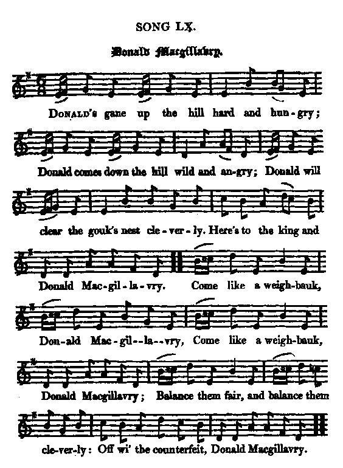
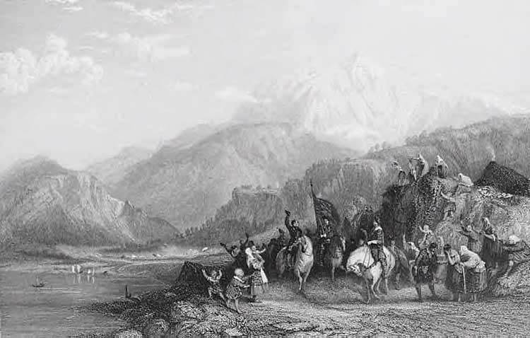

Donald McGillavry
Text and music by James Hogg
Published in Hogg's "Jacobite Relics of Scotland", volume I, N°60, in 1819Later on acknowledged as "a trifle of his own, which he put in to fill up a page".
Tune - Mélodie
"Donald McGillavry"
from Hogg's "Jacobite Relics" 1st Series N°60
Sequenced by Christian Souchon


|
1. Donald's gane up the hill hard and hungry,
Donald comes down the hill wild and angry; Donald will clear the gouk's nest cleverly, Here's to the king and Donald McGillavry. Come like a weighbauk, Donald McGillavry, Come like a weighbauk, Donald McGillavry, Balance them fair, and balance them cleverly: Off wi'the counterfeit, Donald McGillavry. 2. Donald's run o'er the hill but his tether, man, As he were wud, or stang'd wi' an ether, man; When he comes back, there's some will look merrily: Here's to King James and Donald McGillavry. Come like a weaver, Donald McGillavry, Come like a weaver, Donald McGillavry, Pack on your back an elwand sae cleverly; Gie them full measure, my Donald McGillavry. 3. Donald has foughten wi' rief and roguery; Donald has dinner'd wi banes and beggary, Better it were for Whigs and Whiggery Meeting the devil than Donald McGillavry. Come like a tailor, Donald McGillavry, Come like a tailor, Donald McGillavry, Push about, in and out, thimble them cleverly, Here's to King James and Donald McGillavry. 4. Donald's the callan that brooks nae tangleness; Whigging and prigging and a'newfangleness, They maun be gane: he winna be baukit, man: He maun hae justice, or faith he'll tak it, man. Come like a cobler, Donald McGillavry, Come like a cobler, Donald McGillavry; Beat them, and bore them, and lingel them cleverly, Up wi' King James and Donald McGillavry. 5. Donald was mumpit wi mirds and mockery; Donald was blinded wi' blads o' property; Airles ran high, but makings were naething, man, Lord, how Donald is flyting and fretting, man. Come like the devil, Donald McGillavry, Come like the devil, Donald McGillavry; Skelp them and scaud them that proved sae unbritherly, Up wi' King James and Donald McGillavry! |
 |
1. Donald gravit le mont, hagard et affamé,
Donald en redescend, furieux et courroucé; Il veut vite chasser le coucou hors du nid. Vive notre Roi et Donald McGillavry! Sois donc un bon peseur, Donald McGillavry, Sois donc un bon peseur, Donald McGillavry, Et soupèse-les bien, en peseur averti! Sus au contrefacteur, Donald McGillavry! 2. Donald vient de franchir le mont, rompant sa longe, Morsure de serpent, ou quelque mauvais songe? A son retour ici plus d'un sera ravi: Vive le Roi Jacque(s) et Donald McGillavry. Sois donc un bon tisseur, Donald McGillavry, Sois donc un bon tisseur, Donald McGillavry, Prends sur ton dos ton aune, en tisseur averti! Qu'ils aient pleine mesure, Donald McGillavry! 3. Donald combat avec des bandits et des gueux; Donald dîne avec des bannis et des pouilleux, Mieux vaudrait pour les Whigs et pour la Whiguerie Avoir affaire au diable qu'à McGillavry. Sois donc un bon tailleur, Donald McGillavry, Sois donc un bon tailleur, Donald McGillavry, Et joue de ton aiguille en tailleur averti! Vive le Roi Jacque et Donald McGillavry! 4. Donald, ce délicat, déteste le désordre; Des Whigs il n'a que faire, abhorrant leur cohorte De novateurs pédants. Ne le contrariez point: Il obtiendra justice à la force du poing! Fais donc le cordonnier, Donald McGillavry, Fais donc le cordonnier, Donald McGillavry; Tanne, perce et couds-les, cordonnier averti! Vive le Roi Jacque et Donald McGillavry! 5. Donald était las d'ouïr leurs sarcasmes sans cesse; Ce Donald qu'aveuglaient de trompeuses largesses; Des arrhes élevés, suivis d'aucun paiement! Mon Dieu, comme il maugrée, que son tourment est grand! Deviens donc un démon, Donald McGillavry, Deviens donc un démon, Donald McGillavry; Arrache à ces vauriens et cheveux, et sourcils. Vive le Roi Jacque et Donald McGillavry! (Trad. Ch.Souchon (c) 2004) |
|
James Hogg in his "Jacobite Relics, volume 1", presents this song as
"one of the best songs that ever was made"
and "manifestly alluding to one of the risings either in 1715 or 1745".
He then tries to guess which Donald McGillavry is meant in the song : - A [chief] McGillavray of Drum[na]glass was mentioned in the song called the Chevalier's Muster Roll of 1715 [2nd stanza, last line]. - Then he names "one gentleman of the name (John McGillavry) who was tried at Liverpool and executed at Preston on the 10th of January 1716". - He also mentions that in the 1745 rebellion another McGillavray (of Drumnaglass) led the Clan-Chattan forces raised by Lady McIntosh (See "Another song on Culloden Day" - this song quotes three McGillavrays: notes [9], [10] and [11]). - [And it was a certain Farquhar McGillevrey who slew Colonel Gardener at the battle of Prestonpans]. Hogg's conclusion is that the name is used in the song as a convenient designation for the Highlanders loyal to the Stuart cause, and is "a comical patronymic that could not give offence to any one, nor yet render any clan particularly obnoxious to the other party, by the song being sung in mixed assemblies." He adds: "therefore a bard connected with that associated clan [Clan Chattan] may have written it. I am however disposed to think that by that single name all the Highlanders are meant. It is a capital old song, and very popular." In spite of this keen acknowledgment and these painstaking investigations, sleuth Hogg appears here to be a self-complacent, shameless liar, (as much as a talented forger and music composer), since he hardly may have forgotten that he is the author of this masterpiece . This forgery was the only song which earned Hogg, the "Shepherd of Ettrick" compliments of the otherwise utterly critical reviewer of the Edinburgh Review . Similarly, the "Séries" , also a forgery amidst a collection of folk songs was, some years later, to mostly contribute to the fame of the "Barzaz Breiz". The Shepherd avowed his subterfuge in 1831, what the Breton Viscount Hersart de la Villemarqué, keenly complimented on account of his "druidic catechism", never did. Apparently (written in 2025) James Hogg's 3-beat melody has been completely ousted among today's Celtic songsters by a 4-beat version with a slightly different melodic line recorded by a dozen artists: Silly Wizard, Caledonix, Glengarry Bhoys, Emty Hats, Wide Range, Kelta, etc. (However, Ronnie Browne of the Corries, Alasdair McDonald with his CD "Tamlin" and Ewan McColl still remain faithful to Hogg). In addition there is a "McGillavry March", quite different from Hogg's tune. It can be found on TouTube performed by military bands. |
James Hogg dans ses "Reliques Jacobites, volume 1", présente ce chant comme
"l'un des meilleurs chants jamais écrits"
, ayant "manifestement trait au
soulèvement Jacobite de 1715 ou à celui de 1745".
Puis il s'efforce d'établir de quel Donald McGillavry il peut s'agir : - Un [chef] McGillavry of Drum(na)glass est mentionné dans le chant intitulé "le registre de role du Chevalier" datant de 1715 [2ème couplet, dernier vers]. - Puis il cite "un gentilhomme du même nom (John McGillavry) qui fut jugé à Liverpool et exécuté à Preston le 10 janvier 1716." - Il mentionne également, dans le cadre de la rébellion de 1745, un McGillavray (of Drumnaglass) qui était à la tête des troupes de Lady McIntosh (Cf. "Un autre chant sur Culloden" , - Ce chant ne cite pas moins de trois McGillavray: notes [9], [10] et [11]). - [Enfin c'est un certain Farquhar McGillevrey qui porta le coup fatal au colonel Gardener à Prestonpans]. La conclusion de Hogg, c'est qu'il s'agit ici d'un nom passe-partout désignant les Highlanders fidèles à la cause des Stuart, "un patronyme burlesque dont personne ne pourrait s'offusquer et qui n'attirerait sur aucun clan en particulier la vindicte de l'autre parti, quand le morceau était chanté dans des lieux publics". Il ajoute: "Il se peut donc que ce soit un barde du Clan Chattan qui l'ait composé. Je pencherais cependant pour un nom désignant les Highlanders en général. C'est un vieux chant magistral et très populaire." En dépit de cet hommage appuyé et de ce travail élaboré de déduction, Sherlock Hogg n'est en fait ici qu'un impudent menteur, imbu de lui-même (mais aussi un faussaire et un compositeur de talent). Aurait-il oublié qu' il est lui-même l'auteur de ce chef d'œuvre ? Comme, plus tard, pour les "Séries" du "Barzaz Breiz", c'est ce morceau, forgé de toutes pièces, qui valut à Hogg, le "berger d'Ettrick" les compliments du critique de l' "Edinburgh Review" qui attaquait sinon tout le reste de l'ouvrage. Le berger vendit la mèche en 1831, ce que le Vicomte breton, Hersart de la Villemarqué, vivement complimenté pour son "catéchisme druidique", ne fit jamais. Il semble (écrit en 2025) que la mélodie à 3 temps de James Hogg ait été presque complètement évincée dans la variété celtique par une version à 4 temps avec une ligne mélodique légérement différente enregistrée par une dizaine d'artistes: Silly Wizard, Caledonix, Glengarry Bhoys, Emty Hats, Wide Range, Kelta, etc. (cependant, Alasdair McDonald sur le CD "Tamlin" et Ewan McColl restent fidèles à Hogg). Par ailleurs il existe une "McGillavry March" qui se distingue complètement de la mélodie de Hogg. On la touve sur Youtube, interpretée par des fanfares militaires. |
"Donald McGillavry, 6/8 James Hogg's version, sung by Alasdair McDonald (Tamlin)"
"Donald McGillavry, new 4/4 version" (sequenced by C.Souchon)
"McGillavry March" (by the 43rd Infantery Regiment of Lille )